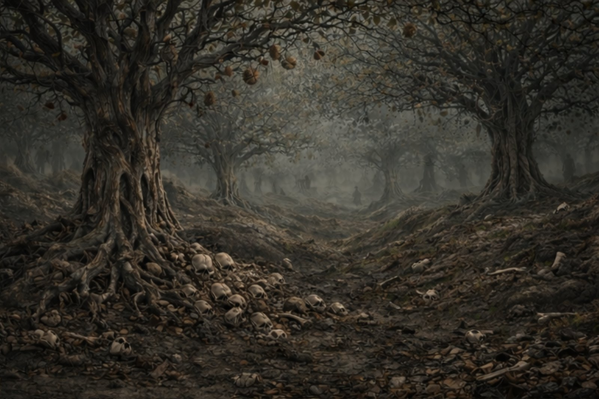
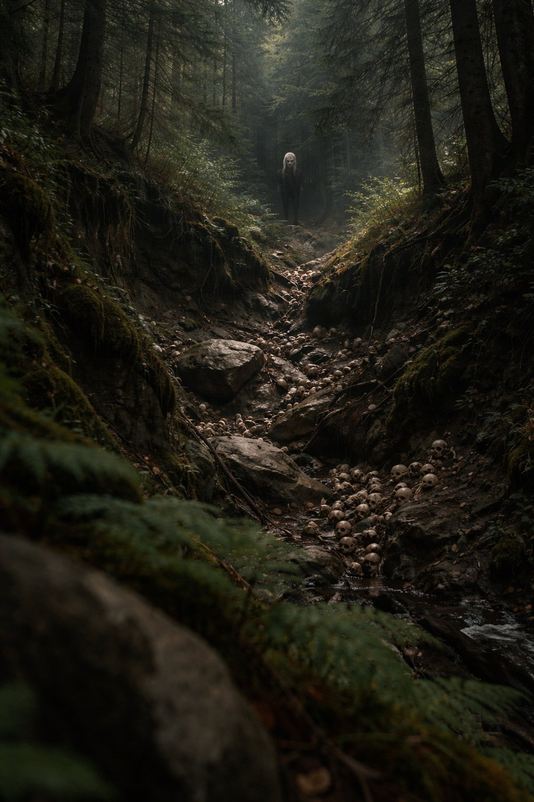

The Orchard is neither alive nor dead. It is not an organism. It is a consciousness-of-will — static yet reactive. It remembers and yearns. It does not change to match its victims. It reacts to metaphysical weight.
It exists outside conventional theology. It is not heaven, hell, purgatory, or liminal space. It is a location that insists on itself. A place that was never built but has always been growing. A wound in cosmology that learned to breathe.
The Orchard remembers in ways older than prayer. It tastes fear through its roots and traces lost breaths through its branches. Everything that falls into it remains as imprints — unresolved equations.
It grows according to what the world failed to hold. Its limbs are made from untaken apologies. Its knots are mid-sentence deaths. Its bark carries ghost screams. Its fruit contains futures that never happened.
The Sisters are the Orchard's instruments. Human once, taken by Hell, cast back when Hell could not contain what they became. Each governs a domain:
Souls the Orchard cannot finish. Those who refused at the wrong moment. Those stolen from Above or Below whose souls were too loud. Those who died mid-ritual.
They are fragments of will drifting through branches like forgotten thoughts. They wear the blurred faces of their former selves. They cannot touch, strike, or warn — but they bear witness to every taking.

They are proof of the Sisters' imprecision and the cosmos's inability to categorize what it has lost.
Recovered axioms. Provenance unknown. Accuracy unverified.